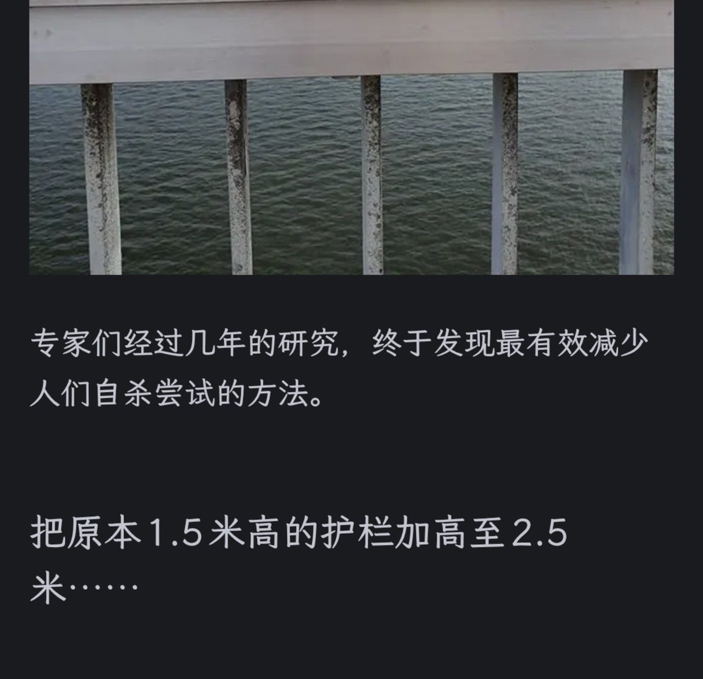

サイバー環状線
@CyberKanjousen
中国的「衡水系中学」，在课堂上讲述了大量激励人的鸡汤，最终却将学生的自杀率翻了数倍。
校领导们经过几年的研究，终于发现最有效减少学生们自杀尝试的方法：
把原本 1.5 米高的铁护栏加高至 4 米，将楼道完全封闭起来。

孙悟元
@wuyuandev
韩国的「生命之桥」，在扶手上设计了大量安慰人的文字，最终将桥上自杀率翻了10倍 https://t.co/JoldXpGQMI